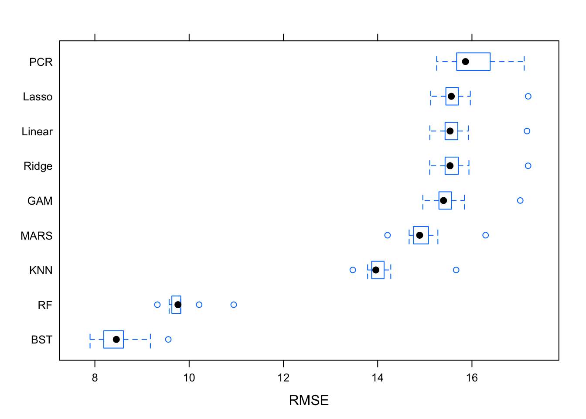

Model Selection for Global Suicide Rates
Objective: To find the best model for global suicide rates based on demographic factors. This analysis is focused more on a sound model building and selection process than it is on finding a comprehensive set of predictive variables.
Introduction
The World Health Organization (WHO) estimates that each year approximately one million people die from suicide, which represents a global mortality rate of 16 people per 100,000 or one death every 40 seconds. It is predicted that by 2020 the rate of death will increase to one every 20 seconds. In the last 45 years suicide rates have increased by 60% worldwide. Suicide is now among the three leading causes of death among those aged 15-44 (male and female). Suicide attempts are up to 20 times more frequent than completed suicides. Mental health disorders (particularly depression and substance abuse) are associated with more than 90% of all cases of suicide. However, suicide results from many complex sociocultural factors and is more likely to occur during periods of socioeconomic, family and individual crisis.
Data Description
The data used for this project spans the years 1985-2016 and contains information on suicide rates and various socio-economic information. Each observation is a unique country-year combination. The response variables collected for each observation are suicide count and suicide rate per 100,000 people. The predictor variables include country, year, sex, age, population, GDP (corresponding to the year), and GDP per capita (corresponding to the year). This data was pulled together into this dataset from information collected by the United Nations Development Program, the World Bank, and the World Health Organization.
Data Cleaning
Sex and age were recorded as categorical variables and were factored for the purpose of further analysis. The breakdown for age category is as follows: 1: 5-14 years, 2: 15-24 years, 3: 25-34 years, 4: 35-54 years, 5: 55-74 years, 6: 75+ years. After cleaning the data, the resampling method was set to 10-fold cross validation, and the data was split into a training set that was 75% the size of the original data and a test set that was 25% the size of the original data.
master = read_csv("./master.csv") %>%
janitor::clean_names() %>%
mutate(sex = factor(sex, levels = c("male", "female")),
age = factor(age, levels = c("5-14 years", "15-24 years", "25-34 years",
"35-54 years", "55-74 years", "75+ years"))) %>%
rename(prominent_gen = generation) %>%
select(suicides_100k_pop, everything())
master_num = master %>%
select(suicides_100k_pop, year, sex, age, population, gdp_for_year, gdp_per_capita) %>%
mutate(sex = as.numeric(sex),
age = as.numeric(age))ctrl1 = trainControl(method = "cv", number = 10)
set.seed(1)
sample = sample.int(n = nrow(master_num), size = floor(0.75*nrow(master_num)), replace = F)
x = model.matrix(suicides_100k_pop ~., master_num)[,-1]
y = master_num$suicides_100k_pop
train = master_num[sample,]
test = master_num[-sample,]
x_train = model.matrix(suicides_100k_pop~., train)[,-1]
y_train = train$suicides_100k_pop
x_test = model.matrix(suicides_100k_pop~., test)[,-1]
y_test = test$suicides_100k_popExploratory Analysis and Visualization
featurePlot(x, y, plot = "scatter", labels = c("","Y"),
type = c("p"), layout = c(3, 2), alpha = 0.5)pairs(master_num)The most notable associations we observed during our exploratory analysis were between suicide rates and population, GDP per year, and GDP per capita – with all three being negatively correlated to suicide rate. We also found that suicide rate stayed consistent across years and that rates are higher for males than females. When looking at suicide rates by age, we found that suicide rates generally increased with age.
Model Fitting and Selection
The different models fitted to the data were: ridge regression, lasso, PCR, GAM, KNN, MARS, and regression trees with random forests and boosting.
- A linear model was fitted first as a point of reference. This data does not meet the required normality assumptions and as such we expect large errors from this model.
set.seed(1)
lm.fit = train(x_train, y_train,
method = "lm",
trControl = ctrl1)
predy.lm = predict(lm.fit$finalModel, newdata = data.frame(x_test))
lm_mse = mean((predy.lm - y_test)^2)- In this data set, there is some natural correlation between year and GDP, which is why ridge regression, lasso, and PCR were used. All three of these methods help in this situation since they use a linear regression and then various shrinkage methods. Lasso chooses the best subset of predictors, while ridge regression includes all variables. PCR also uses all predictors, but instead the correlated variables will be grouped together into linear combinations. For all three approaches, cross validation was used to select the best tuning parameters.
set.seed(1)
ridge.fit = train(x_train, y_train,
method = "glmnet",
tuneGrid = expand.grid(alpha = 0,
lambda = exp(seq(-1, 10, length = 100))),
trControl = ctrl1)
predy.ridge = predict(ridge.fit$finalModel, newx = x_test, s = ridge.fit$bestTune$lambda, type = "response")
ridge_mse = mean((predy.ridge - y_test)^2)set.seed(1)
lasso.fit = train(x_train, y_train,
method = "glmnet",
tuneGrid = expand.grid(alpha = 1,
lambda = exp(seq(-1, 5, length = 100))),
trControl = ctrl1)
predy.lasso = predict(lasso.fit$finalModel, newx = x_test, s = lasso.fit$bestTune$lambda, type = "response")
lasso_mse = mean((predy.lasso - y_test)^2)set.seed(1)
pcr.fit = train(x, y,
method = "pcr",
tuneLength = 5,
trControl = ctrl1,
scale = TRUE)
predy.pcr = predict(pcr.fit$finalModel, newdata = x_test, ncomp = pcr.fit$bestTune$ncomp)
pcr_mse = mean((predy.pcr - y_test)^2)- GAM was fitted as an alternative to a multiple linear regression.
set.seed(1)
gam.m1 = gam(suicides_100k_pop ~ year + sex + age + population + gdp_for_year + gdp_per_capita, data = master_num)
gam.m2 = gam(suicides_100k_pop ~ year + sex + age + population + s(gdp_for_year) + gdp_per_capita, data = master_num)
#anova(gam.m1, gam.m2, test = "F")
#plot(gam.m2)
gam.fit = train(x_train, y_train,
method = "gam",
tuneGrid = data.frame(method = "GCV.Cp", select = c(TRUE, FALSE)),
trControl = ctrl1)
#gam.fit$bestTune
#gam.fit$finalModel
predy.gam = predict(gam.fit, newdata = data.frame(x_test))
gam_mse = mean((predy.gam - y_test)^2)- KNN was fitted as a non-parametric option, since this data is not strictly linear and specified assumptions about distributions are not required to fit this model. When implementing this, the data was pre- processed by centering and scaling, and also tuned over k = [1, 200] to improve accuracy and find the optimal value of the KNN decision boundary. The tuning was completed by cross validation.
set.seed(1)
knn.fit = train(x = train[, 2:7],
y = train$suicides_100k_pop,
method = "knn",
preProcess = c("center", "scale"),
tuneGrid = data.frame(k = seq(1, 200, by = 5)),
trControl = ctrl1)
#ggplot(knn.fit)
knn_pred = predict(knn.fit, newdata = data.frame(x_test))
knn_mse = mean((knn_pred - y_test)^2)- MARS was fitted to explore the possibility of piecewise linear models, despite the lack of an overall linear relationship. For this model, cross-validation was used to tune over degrees of features (d = [1, 2]), and number of predictors in the model (p = [2, 10]) to determine the values that produce the best model of this method.
mars_grid = expand.grid(degree = 1:2,nprune = 2:10)
set.seed(1)
mars.fit = train(x = train[, 2:7],
y = train$suicides_100k_pop,
method = "earth",
tuneGrid = mars_grid,
trControl = ctrl1)
#ggplot(mars.fit)
mars_pred = predict(mars.fit, newdata = data.frame(x_test))
mars_mse = mean((mars_pred - y_test)^2)- Regression trees were fitted because suicide rates depend on many different factors and are very complex; splitting the data into simple regions and fitting simple models in each region seemed like a good way to simplify the problem posed by other methods having low predictive power. Random forests build many trees based on bootstrapped samples, while boosting builds many trees based on information from previously grown trees. Both methods were used in an effort to increase the predictive power of the model.
rf.grid = expand.grid(mtry = 1:2,
splitrule = "variance",
min.node.size = 1:2)
set.seed(1)
rf.fit = train(suicides_100k_pop~.,
train,
method = "ranger",
tuneGrid = rf.grid,
trControl = ctrl1)
rf.pred = predict(rf.fit, data.frame(x_test))
rf_mse = mean((y_test - rf.pred)^2)Results
mse = tibble(
'Model' = c("Linear", "Ridge", "Lasso", "PCR", "GAM", "KNN", "MARS", "Random Forest (RF)", "Boosting (BST)"),
'Mean squared error (MSE)' = c(lm_mse, ridge_mse, lasso_mse, pcr_mse, gam_mse, knn_mse, mars_mse, rf_mse, xgb_mse)
)
knitr::kable(mse)| Model | Mean squared error (MSE) |
|---|---|
| Linear | 285.0895 |
| Ridge | 285.3520 |
| Lasso | 285.7102 |
| PCR | 285.2069 |
| GAM | 278.8389 |
| KNN | 218.3622 |
| MARS | 256.3964 |
| Random Forest (RF) | 114.4737 |
| Boosting (BST) | 84.3450 |
resamp = resamples(list(Linear = lm.fit,
Ridge = ridge.fit,
Lasso = lasso.fit,
PCR = pcr.fit,
GAM = gam.fit,
KNN = knn.fit,
MARS = mars.fit,
BST = xgb.fit,
RF = rf.fit))
bwplot(resamp, metric = "RMSE")
After comparing the aforementioned models based on cross validation RMSE (root mean squared error), we determined that the boosted regression trees provide the best fit for the data, followed by random forests, KNN, MARS, GAM, ridge, linear, and lasso. PCR provided the worst fit. GAM, linear, ridge, and lasso all produced models of similar value. The calculated RMSE values can be seen the boxplot above. Boosting gives us the best fit and after tuning we had the following parameters: a max tree depth of 10, a subsample ratio of 0.9, and 600 decision trees. These optimal levels can be seen in this tuning plot:
ggplot(xgb.fit, highlight = TRUE)
Upon cross validation, the average MSE was 8.779, and the average R-squared is 0.786. Both of these values are drastic improvements upon the other models. The average RMSE and R-squared values for the rest of the models aside from random forests, are around 15 and 0.30, respectively. The random forests performed similarly to boosting, with an average RMSE of 10.028 and an average R-squared of 0.730. A plot of the R-squared tuning can be seen below:
plot(xgb.fit, metric = "Rsquared",
plotType = "level", scales = list(x = list(rot = 90)))
For boosting, the most important variable is age, followed by population, sex, the GDP variables, and lastly year.
xgb_imp = xgb.importance(feature_names = xgb.fit$finalModel$feature_names, model = xgb.fit$finalModel)
xgb.plot.importance(xgb_imp)Despite being the best fit of all the models, boosting still does not provide as good a fit for the data as we would like, though this is not entirely unexpected. Given that this is real-world data, it is not too surprising and along the lines of what we expected, especially since none of the predictors are known to be directly related to suicide rates. Going forward, it would also be interesting to split data into regional groups and then fit boosted regression trees that way since there could be some hidden relationships that our analysis is not showing; relationships between the predictor variables given and suicide rates could differ among countries and areas. Even though our analysis shows boosting is the best way to model this particular data, further analysis into suicide rates should include a more comprehensive list of potential predictors.
Future directions for analysis:
- include variables better related to mental health in future models
- explore even more tuning on more parameters (ex. eta, gamma, minimum child weight, and subsample)
- analysis to determine if using 600 decision trees is overfitting the data